A structured documentation of the concepts, workflows, tools and hands-on learning experiences covered throughout the internship journey.
Table of Contents
A hands-on journey through the tools, workflows, and collaborative practices that define real-world engineering development.
The Summer Internship Program began with an introductory session by
Dr. Kiran Wakchaure Sir and
Dr. Tanay Ghosh Sir,
who introduced us to
Tinkerers’ Lab
Its vision and the technical learning approach followed throughout
the internship.
The session provided an overview of the technologies, workflows, collaborative practices and engineering tools that would be explored during the program. It established a clear understanding of how modern technical environments combine software development, documentation, design systems and fabrication workflows into one integrated process.
During the first week, I was introduced to multiple technical domains including professional documentation, development environments, collaborative platforms, visual communication, CAD systems and digital fabrication tools.
Rather than focusing on only one technology stack, the internship introduced a broader interdisciplinary workflow. This helped in understanding how technical planning, engineering design, software workflows, and manufacturing preparation connect together in real-world project development.
PROFESSIONAL DOCUMENTATION & WORKFLOW
One of the first topics introduced during the internship was professional documentation and technical workflow management. I learned that documentation is not only about recording information, but also about organizing technical work, maintaining project clarity, and communicating ideas effectively.
The sessions highlighted the importance of documentation in software development, engineering workflows, collaborative environments, troubleshooting, and long-term project management.
Proper documentation supports:
We also explored how structured workflows improve task management, coordination, and consistency across technical projects.
The organization style of this documentation was inspired by the structured documentation practices followed in Fab Academy, especially the work of Dr. Kiran Wakchaure.
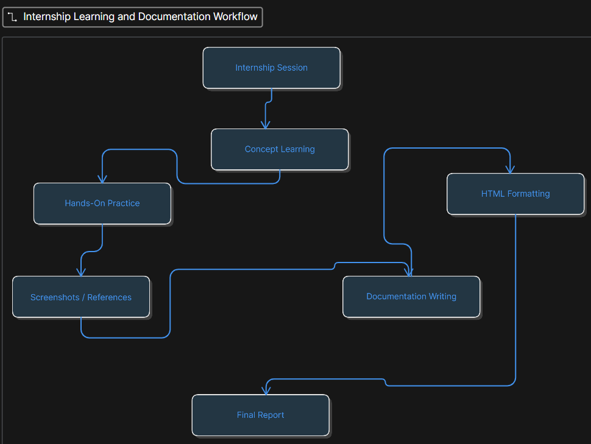
Fig. 1.0: Internship Learning, Task Management, and Technical Documentation Workflow
COLLABORATIVE DEVELOPMENT & VERSION CONTROL
To understand how modern development teams organize and manage technical projects, I explored GitHub and GitLab.
These platforms introduced me to version control systems, collaborative development practices, repository management, and structured project workflows commonly used in software development environments.
Key concepts covered during the learning process included:
The sessions helped in understanding how collaborative platforms simplify project management, maintain development history, and improve coordination between contributors working on shared technical projects.
DAILY GIT WORKFLOW
These are the most important Git commands beginners use regularly. You do not need to memorize everything immediately. Just understand what each command does and practice slowly.
Downloads a GitHub repository from the internet to your computer. Usually done only once when starting a project.
git clone https://github.com/user/repo.gitShows which files were changed, added, or are ready to commit.
git statusTells Git which changed files should be included in the next commit.
git add .Saves a snapshot of your changes with a short message explaining what you changed.
git commit -m "Added homepage design"Uploads your commits from your computer to GitHub.
git pushDownloads the newest changes from GitHub to your computer. Helpful when working with teammates.
git pullShows previous commits and helps you track project history.
git log --oneline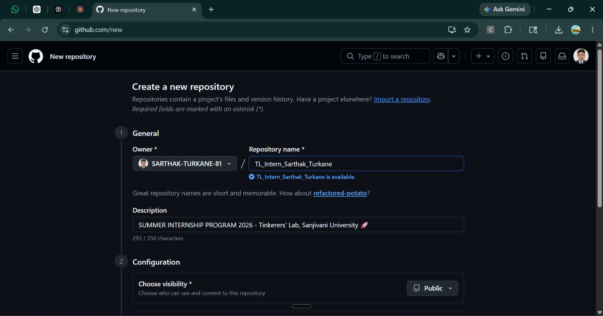
Fig. 2.0: Creation of a new repository for the “Summer Internship Program 2026 - Tinkerers’ Lab, Sanjivani University” project documentation.
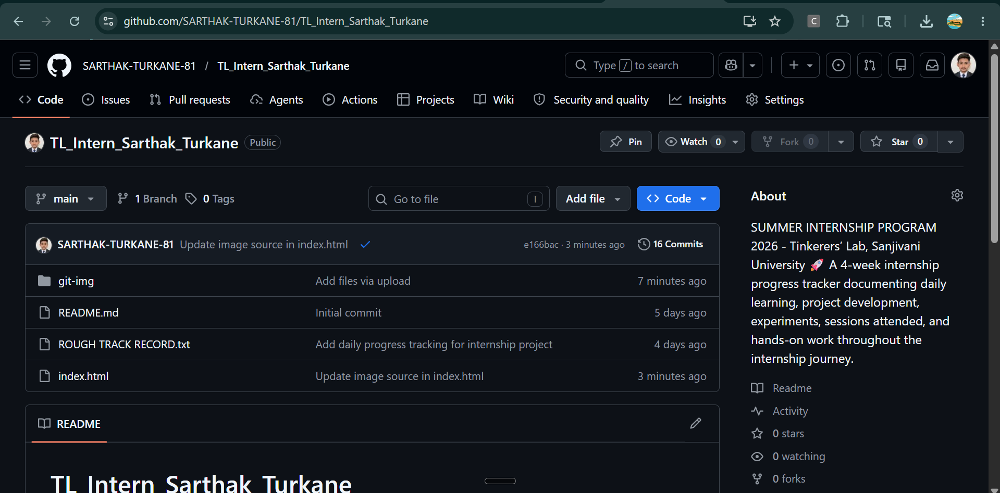
Fig. 2.1: Repository initialization and organization of required project resources, folders, and technical documentation files.
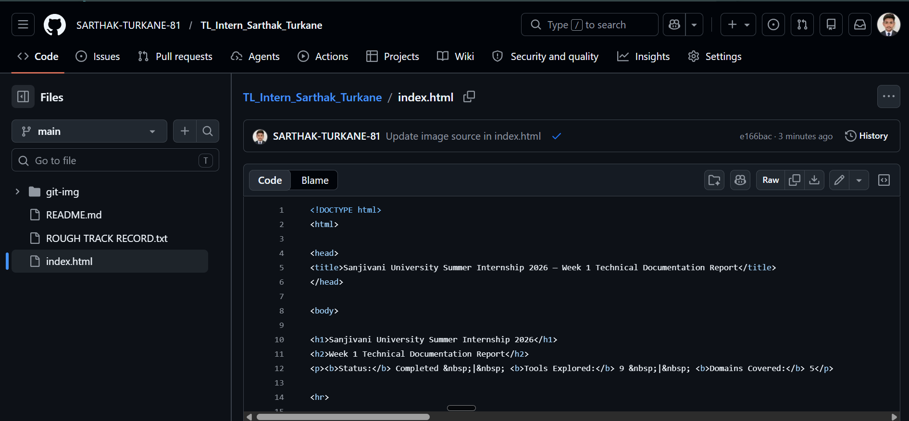
Fig. 2.2: Editing and updating HTML documentation files directly through the GitHub web interface.
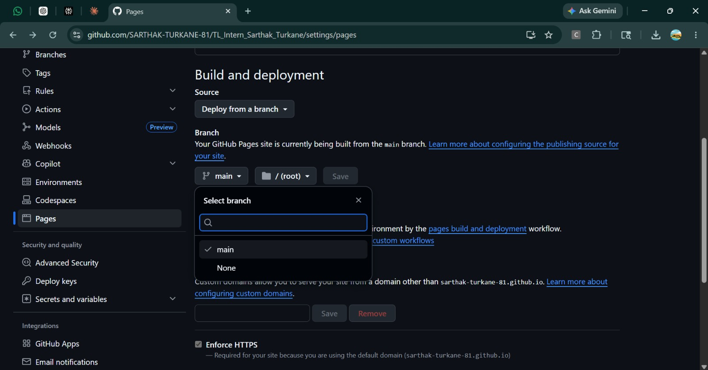
Fig. 2.3: Deployment and visualization of documentation files using GitHub Pages hosting service.
DEVELOPMENT ENVIRONMENT & AI-ASSISTED WORKFLOW
Although I was already familiar with Visual Studio Code (VS Code), I selected it as the primary development environment for preparing this internship documentation project.
Since the documentation was developed as an HTML-based project, VS Code provided an efficient workspace for editing source files, organizing project directories, managing image assets, and maintaining a structured workflow within a single environment.
One of the most useful features during development was the live HTML preview workflow, which made it easier to verify:
The integrated Git and GitHub support inside VS Code also simplified version control operations such as staging changes, reviewing file modifications, committing updates, and synchronizing repositories directly from the editor.
As a Computer Science student, I additionally explored AI-assisted development workflows integrated into the VS Code ecosystem. Multiple AI tools were tested during documentation and interface development, including ChatGPT, Claude Sonnet, Claude Opus, and Blackbox AI.
These tools were primarily used for HTML refactoring, improving documentation clarity, optimizing layout structure, and accelerating rapid prototyping of web components.
git add . git commit -m "changes made" git push origin main
The above Git commands were used from VS Code to stage, commit, and upload modified project files to GitHub for version control and deployment tracking.
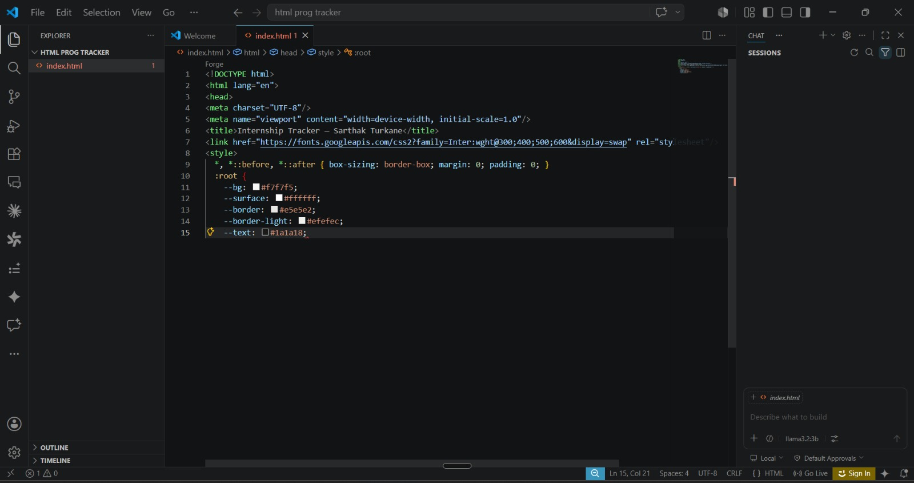
Fig. 3.0: HTML document development in Visual Studio Code with embedded CSS for enhanced user interface design.
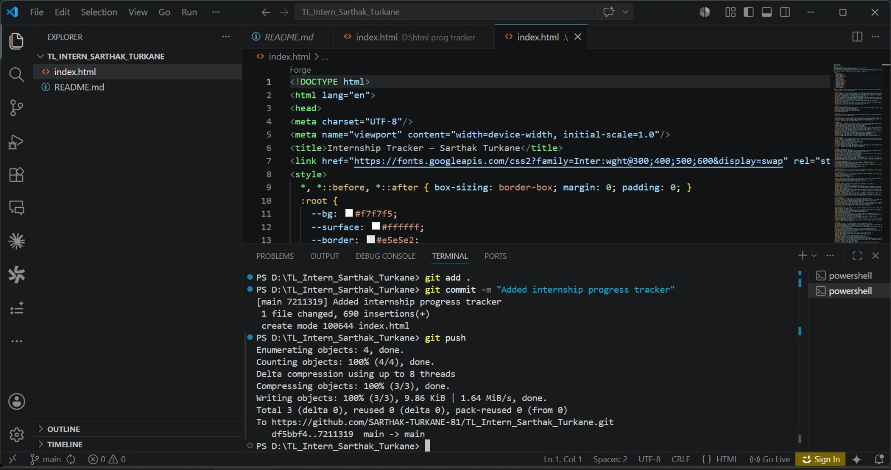
Fig. 3.1: Version control workflow for saving and uploading modified VS Code project files to GitHub repository.
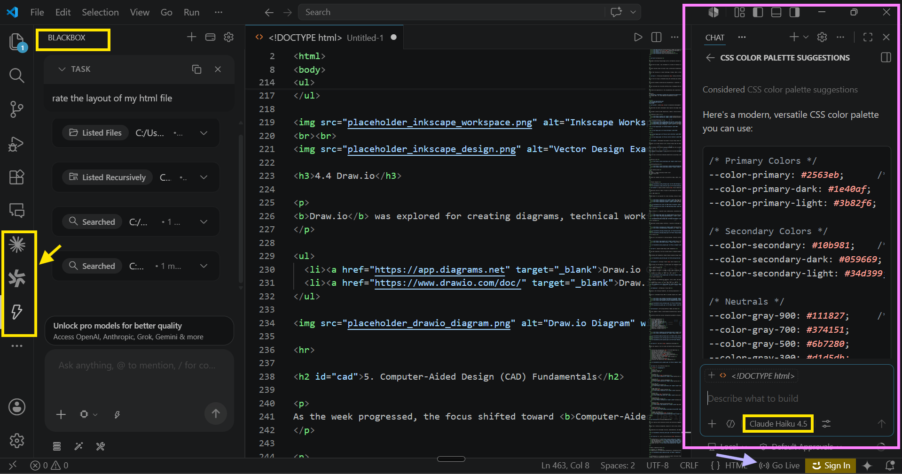
Fig. 3.2: Utilization of AI-assisted development tools for HTML refactoring, documentation optimization, and rapid web component prototyping.
A major component of Week 1 focused on understanding the principles, workflows, and technologies involved in digital content creation, visual communication, and technical presentation. The exploration emphasized how digital information can be captured, structured, designed, and communicated effectively using modern software platforms. Particular attention was given to workflow optimization, visual hierarchy, scalability, and technical documentation practices. Four major platforms were studied across different domains including screen recording, graphic design, vector illustration, and diagrammatic system visualization.
OBS Studio was explored as a professional-grade open-source software platform for screen recording, live media capture, and real-time content production. The study involved understanding recording pipelines, scene composition, source management, audio-video synchronization, and export workflows used in digital tutorial creation and technical demonstrations.
The platform demonstrated how high-quality instructional content, software walkthroughs, presentations, and system demonstrations can be produced through structured recording environments. Features such as multi-source scene integration, display/window capture, audio mixing, transition management, and encoding configurations highlighted the technical aspects of digital media production and broadcasting workflows.
Additionally, OBS Studio introduced concepts related to media compression, streaming protocols, frame rendering, bitrate management, and recording optimization, which are critical in professional content distribution and online communication systems.
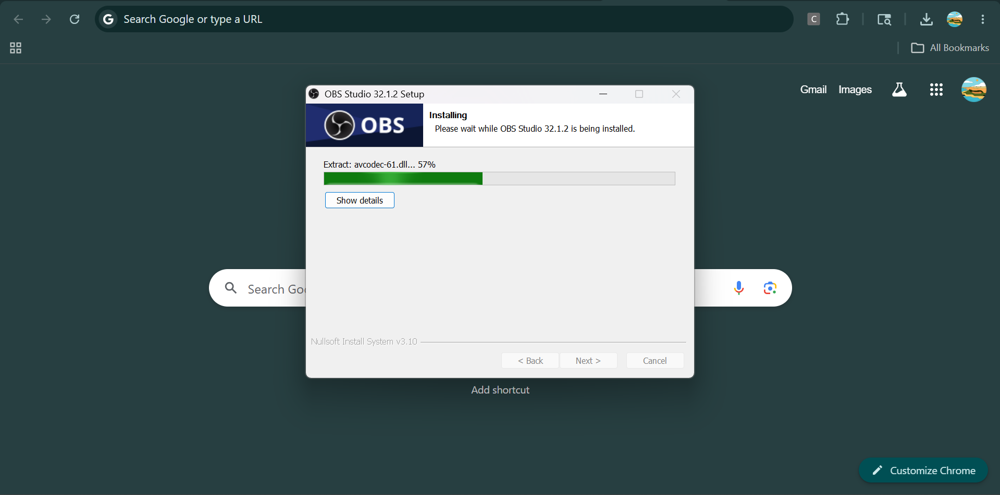
Fig. 4.1.0: Installation and Initial Setup of OBS Studio Recording Software
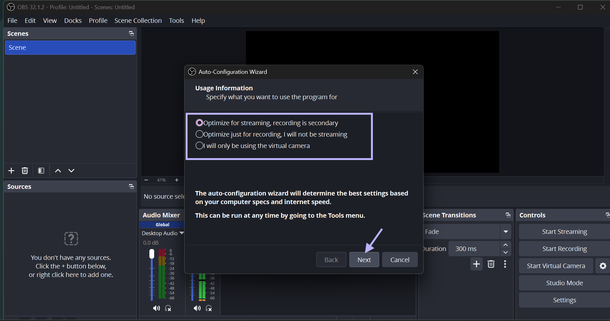
Fig. 4.1.1: Configuration of OBS Studio Recording and Display Settings According to Project Requirements
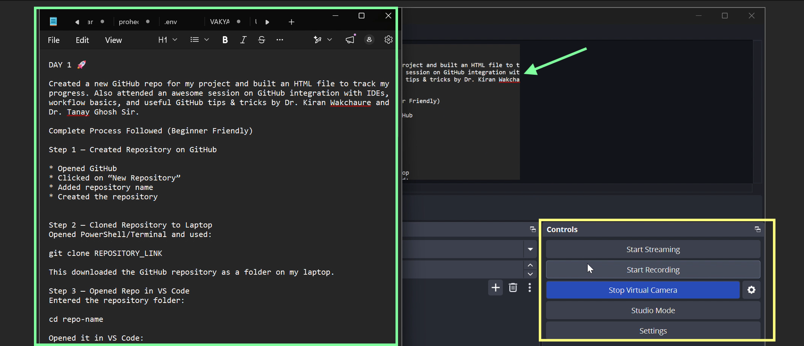
Fig. 4.1.2: Real-Time Screen Recording Demonstration of Notepad Application Using OBS Studio
Video 4.1: OBS Studio Installation, Configuration, and Screen Recording Demonstration
Canva was explored as a cloud-based visual communication, graphic design, and digital publishing platform used for developing presentations, infographics, marketing materials, social media assets, posters, UI mockups, and branded communication content. The platform demonstrated how modern web-based design systems enable users to create professional-grade visual assets through template-driven workflows, drag-and-drop interfaces, and integrated cloud collaboration technologies.
The exploration focused on understanding the core principles of digital visual communication, including typography management, spacing systems, alignment structures, color theory, contrast optimization, visual hierarchy, composition balancing, and information readability. These principles are fundamental in ensuring that digital content remains visually organized, accessible, and effective across multiple display environments and audience types.
Through practical experimentation, Canva demonstrated how structured design frameworks and reusable component systems improve workflow efficiency and maintain design consistency throughout large-scale content production processes. The platform also highlighted the role of responsive layouts, grid systems, layered object management, and dynamic resizing tools in adapting visual content for different screen resolutions and media formats.
Additional exploration involved understanding Canva’s integrated asset management ecosystem, which includes stock media libraries, icon repositories, font systems, animation tools, branding kits, and collaborative editing environments. These features illustrated how cloud-based platforms streamline digital production pipelines and support real-time teamwork in professional communication and marketing workflows.
The platform further introduced rapid prototyping methodologies and template-based automation techniques commonly used in modern digital branding, educational content creation, advertising design, and social media management systems. This demonstrated how scalable visual communication strategies can be implemented efficiently while maintaining branding standards, visual consistency, and audience engagement.
Overall, Canva provided practical exposure to contemporary digital design workflows, emphasizing the integration of user-friendly interfaces with advanced visual communication principles to support professional content development in academic, technical, and commercial environments.
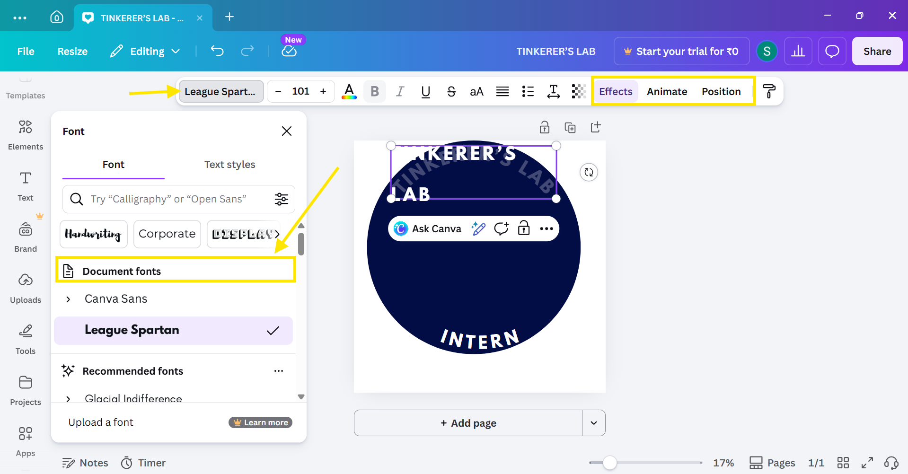
Fig. 4.2.0: Logo Enhancement Using Canva Through Font Styling, Color Adjustment, Background Customization, Text Positioning, and Animation Effects
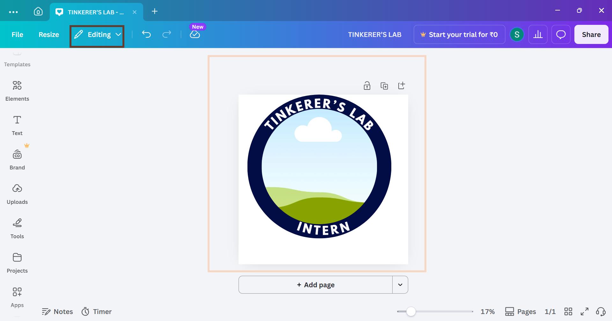
Fig. 4.2.1: Image Editing and Application of Creative Design Templates Within Canva Workspace
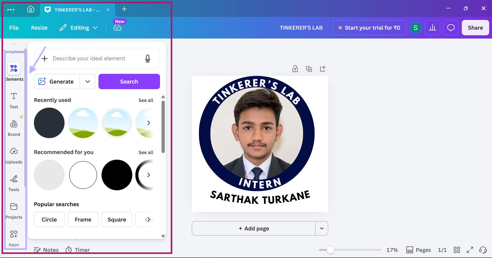
Fig. 4.2.2: Final Logo Refinement, Export Preparation, and Saving of Completed Design Assets
To understand scalable graphic design workflows and vector-based rendering systems, Inkscape was explored as an open-source vector graphics editor widely used for technical illustrations, scalable artwork, interface design, and diagram creation.
The exploration introduced the mathematical foundations of vector graphics, where graphical objects are represented using paths, nodes, curves, and geometric equations instead of pixel-based raster formats. This approach enables resolution-independent rendering, allowing graphics to be scaled without loss of visual quality.
Practical work within Inkscape demonstrated concepts such as Bézier curve manipulation, object transformation, layer management, path operations, SVG (Scalable Vector Graphics) standards, and precision-based illustration workflows. These capabilities are particularly important in technical documentation, UI/UX asset creation, engineering illustrations, and digital publishing systems.
The platform also highlighted the advantages of vector-based workflows in maintaining design consistency, editability, and cross-platform scalability across multiple output formats.
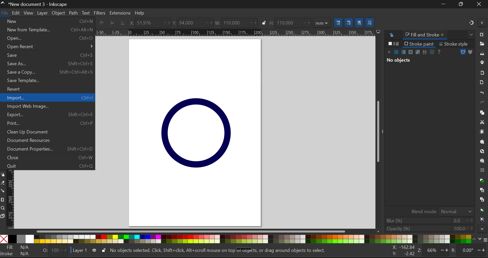
Fig. 4.3.0: Circular Vector Object Creation Using Stroke Properties in Inkscape
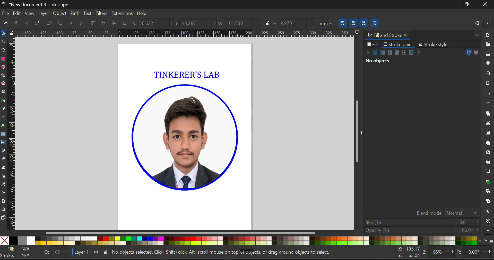
Fig. 4.3.1: Integration of Raster Profile Image Within Circular Vector Boundary
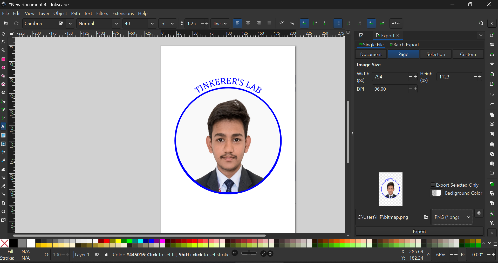
Draw.io was explored as a diagramming and system visualization platform used for creating technical diagrams, process workflows, architectural layouts, flowcharts, organizational structures, and planning frameworks.
The platform demonstrated how complex systems, operational processes, and technical architectures can be abstracted into structured visual representations for improved understanding, analysis, and communication. Emphasis was placed on logical flow representation, process mapping, component relationships, and hierarchical structuring within diagrams.
Through workflow experimentation, Draw.io introduced concepts related to systems modeling, process visualization, UML-style structuring, network representation, and documentation standardization. These skills are highly applicable in software engineering documentation, project management, systems analysis, workflow automation, and technical planning environments.
The exploration also reinforced the role of diagrammatic communication in simplifying complex information, improving collaboration, and supporting structured problem-solving methodologies within technical and organizational contexts.
Video 4.4: Workflow Diagram Development and Process Visualization Using Draw.io
As the week progressed, the focus shifted toward Computer-Aided Design (CAD) — a discipline central to engineering, manufacturing, digital prototyping, and product development. CAD systems provide the ability to create, modify, analyze, and optimize digital designs with precision.
Understanding CAD fundamentals helped bridge conceptual design thinking with practical engineering workflows, setting the stage for both 3D modeling exploration and 3D printing preparation in the sections that follow.

Before moving into 3D modeling, I learned about two fundamental approaches used in digital design: Raster Graphics and Vector Graphics. Understanding this distinction explained how tools like Inkscape (vector-based) differ from traditional image editors, and why different formats are suited to different workflows.
Raster graphics use pixels or bitmaps to store image information. Because image quality depends on resolution, scaling up a raster image can introduce pixelation and reduced clarity. Raster graphics are commonly used for photographs, detailed image content, and digital imaging applications.
Common file formats: .BMP, .TIF, .GIF, .JPG

Vector graphics use mathematical equations, curves, paths, and algorithms to generate shapes. Because they are mathematically generated rather than pixel-dependent, vector graphics maintain quality at any size — making them ideal for technical drawings, engineering workflows, printing, and scalable design applications.
Common file formats: .SVG, .EPS, .PDF, .AI, .DXF

Building on the 2D design foundation, the learning progressed to 3D modeling concepts and engineering design workflows. This introduced how digital objects are modeled, structured, modified, and prepared for engineering and manufacturing applications.
Exposure to Autodesk Fusion 360 provided insight into a CAD-based modeling environment used for design creation, product development, engineering workflows, and digital prototyping in professional settings.


The final segment of Week 1 covered additive manufacturing — specifically how digital 3D models are transformed into machine-ready printable instructions through slicing workflows. This was explored using Bambu Lab Studio, a slicing and printer configuration environment.
The workflow covered how various configuration parameters influence print behavior and output quality. The following settings were studied:


Beyond tool exposure, the first week contributed toward developing a combination of technical, organizational, and workflow-oriented skills across all five domains explored.

| Tool | Primary Purpose | Official Link |
|---|---|---|
| GitHub | Version Control & Collaboration | github.com |
| GitLab | Repository & Workflow Management | gitlab.com |
| VS Code | Development Environment | code.visualstudio.com |
| OBS Studio | Recording & Content Creation | obsproject.com |
| Canva | Visual Design & Presentation | canva.com |
| Inkscape | Vector Graphics Design | inkscape.org |
| Draw.io | Diagrams & Workflow Visualization | app.diagrams.net |
| Fusion 360 | CAD & 3D Modeling | autodesk.com/fusion-360 |
| Bambu Lab Studio | 3D Printing Preparation & Slicing | bambulab.com |
The first week was both technically diverse and practically engaging. Rather than focusing narrowly on one technology, the internship introduced multiple domains simultaneously — which helped me understand how documentation, development, design, and fabrication workflows connect within broader technical ecosystems.
Coming from a technical background, exposure to tools across software development, design, CAD, and manufacturing environments expanded my perspective beyond isolated software usage and provided a wider view of interdisciplinary workflows.
The experience also encouraged curiosity, experimentation, and adaptation while working with unfamiliar tools and concepts. This cross-domain awareness will serve as a strong foundation for the weeks ahead.

Status: Completed
Week Focus: Professional Documentation, Collaboration Platforms, Development Environment, Digital Design Fundamentals, CAD, 3D Modeling, and 3D Printing Workflow.
Prepared for: Sanjivani University Summer Internship Program 2026
Week 1 Technical Documentation Record